1Stanford University, 2UC Berkeley, 3Shanghai Jiao Tong University, 4xdof.ai
arXiv:2606.10305v1 [cs.RO], 2026년 6월 9일
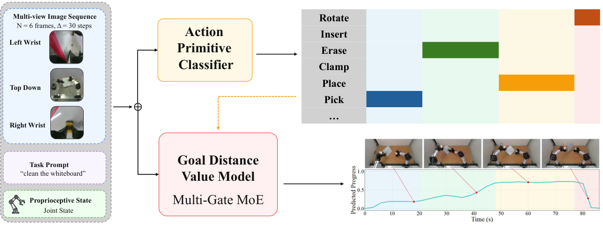
장기 구간 조작을 위한 vision-language-action(VLA) policy의 파인튜닝은 여전히 행동 복제에 크게 의존하며, 이는 비용이 많이 드는 고품질 시연을 필요로 하고 policy를 시연 분포 부근에 머물게 한다. 보상 모델은 시연의 가중치를 재조정하고 실제 로봇 강화학습(RL)에 조밀한 감독 신호를 제공함으로써 이러한 의존성을 줄일 수 있지만, 조밀성과 정확성, 범용성을 모두 갖추어야 한다. 기존 방법은 이 요건을 충족하지 못한다. 태스크별 단계 인식 모델은 정확하지만 태스크마다 주석이 필요하며, 범용 vision-language model(VLM) 보상 모델은 폭넓게 적용할 수 있으나 세밀한 장기 구간 진행도를 포착하기에는 지나치게 거칠다. 본 연구는 action primitive 기반 단계 추정기와 멀티게이트 Mixture of Experts(MMoE) value head를 결합하여 여러 조작 태스크에 걸쳐 조밀한 스텝별 보상을 생성하는 멀티태스크 단계 인식 보상 모델 SARM2를 제안한다. SARM2를 기반으로, 저비용 자율 rollout으로부터 VLA policy를 개선하는 on-policy 보상 유도 프레임워크 SPIRAL(Self-Policy Improvement via Reward-Aligned Learning)을 추가로 제안한다. 10개 태스크 벤치마크에서 SARM2는 가장 강력한 baseline 대비 value 추정 MSE를 80% 줄인다. 또한 SPIRAL에 사용할 경우 Folding Shorts(58% → 100%)와 Cleaning Whiteboard(50% → 90%)에서 태스크 성공률을 약 50% 수준에서 거의 완벽한 성능으로 향상시키며, 고품질의 조밀한 보상이 안정적인 로봇 데이터 플라이휠의 핵심임을 보여준다. 프로젝트 웹사이트: https://qianzhong-chen.github.io/sarm2.github.io/.
키워드: 보상 모델링, 강화학습, 로봇 조작
Vision-Language-Action(VLA) 모델은 end-to-end policy 학습을 로봇 조작의 지배적인 패러다임으로 확립했다. 그러나 대부분의 VLA는 별도의 조치 없이 단기 구간을 넘어서는 태스크를 수행하는 데 어려움을 겪는다. 이를 장기 구간 태스크로 확장하려면 일반적으로 도메인 내 데이터에 대한 파인튜닝이 필요하며, 지도 파인튜닝(SFT)은 대량의 인간 시연을 요구하고 분포 외(OOD) 실패에도 여전히 취약하다.
문의 사항은 qchen23@stanford.edu로 연락하기 바란다.
최근 방법은 보상 모델을 활용해 학습 샘플을 필터링하고 고품질 데이터에서 더 많은 가치를 추출하지만, 이러한 offline 접근법은 시연 분포에 제약되며 rollout을 통해 스스로 개선할 수 없다. π0.6∗ 및 ConRFT와 같은 방법은 on-policy DAgger를 통해 policy를 지속적으로 개선하지만, 원격조작과 policy 학습 모두에 숙련된 운용자의 비용이 많이 드는 human-in-the-loop 감독이 필요하다. 별도의 연구 계열은 희소 보상과 함께 online 상호작용 데이터를 사용하지만 장기 구간 태스크에서는 충분한 성능을 내지 못한다. 이러한 연구 방향 전반에서 VLA-RL의 확장은 장기 구간 태스크의 각 세그먼트가 올바르게 실행되었는지를 충실하게 판단할 수 있는 정확한 보상 모델에 달려 있다.
기존 조작용 보상 모델은 태스크별 보상 모델과 범용 보상 모델이라는 두 부류로 나뉜다. 초기의 태스크별 설계는 일반적으로 좁은 범위의 시연으로 학습되며, 미묘한 단계 전이와 누적 오류를 포착하기 어려운 장기 구간 및 OOD 조건에서 성능이 저하된다. SARM은 장기 구간 태스크의 정확도를 향상시키는 단계 조건부 계층 구조를 추가하지만, 여전히 단일 태스크에 국한되고 태스크별 단계 주석에 의존하므로 태스크 다양성이 증가할수록 적용 가능성이 제한된다. 반면 범용 VLM 기반 보상 모델은 사전학습된 VLM의 광범위한 사전 지식을 활용하여 태스크 전반에 일반화하지만, 스텝 수준의 예측이 대체로 거칠고 잡음이 많아 장기 구간 조작을 위한 조밀한 감독 신호로는 적합하지 않다. VLA-RL을 대규모로 지원하려면 보상 모델이 조밀하고 정확하며 도메인 전반의 장기 구간 태스크를 감독할 수 있을 만큼 범용적이어야 한다는 세 가지 요건을 동시에 충족해야 하지만, 기존 보상 모델 중 이 세 요건을 모두 충족하는 모델은 없다.
본 연구는 범용 단계 추정기와 멀티게이트 Mixture of Experts(MMoE) value head를 결합한 멀티태스크 단계 인식 보상 모델 SARM2를 제안한다. 단계 추정기는 공유 action primitive 어휘를 통해 태스크 간에 전이되며, 예측된 primitive가 해당 MMoE gate를 선택하여 value head가 가장 관련성 높은 도메인별 및 action별 expert를 활성화하도록 유도함으로써 정확하고 조밀한 value 추정을 수행한다. 또한 SARM2의 조밀한 보상과 저비용 자율 rollout을 활용해 자기 개선형 데이터 플라이휠을 구성하는 on-policy 실제 로봇 RL 프레임워크 SPIRAL(Self-Policy Improvement via Reward-Aligned Learning)을 제안한다. 본 연구의 기여는 다음과 같다.
SARM2는 일반화 가능한 action primitive 단계 추정기와 MMoE value head를 긴밀하게 결합한 멀티태스크 단계 인식 보상 모델이다. 예측된 primitive가 해당 MMoE gate를 직접 선택하여 단일 모델 내에서 다양한 장기 구간 태스크에 걸쳐 정확하고 조밀한 보상을 생성한다.
SPIRAL은 SARM2의 조밀한 보상을 활용하는 보상 정렬형 on-policy residual RL 프레임워크이다. SPIRAL은 자율 로봇 데이터 플라이휠을 완성하여 최소한의 인간 개입만으로 장기 구간 태스크에서 policy를 지속적으로 개선할 수 있게 한다.
본 연구는 실제 환경의 두 가지 장기 구간 조작 태스크인 Folding Shorts와 Cleaning Whiteboard에서 제안 방법을 검증한다. SPIRAL에 통합된 SARM2는 희소 보상 및 대규모 VLM 기반 보상 모델 baseline보다 우수한 성능을 보이며, downstream policy의 성공률을 크게 향상시킨다.
Section 4.1의 Robometer도 이에 해당한다. SARM2는 두 패러다임을 결합한다. 즉, 공유 action-primitive vocabulary를 기반으로 구축한 재사용 가능한 stage estimator와, 단일 모델에서 여러 task에 적응하는 multi-task value head를 함께 사용한다.
실제 로봇 데이터에 대한 RL은 두 가지 문제로 인해 제약을 받는다. 하나는 long-horizon task에서 dense reward를 얻는 것이고, 다른 하나는 반복적인 diffusion/flow sampling을 통해 backpropagation을 수행하는 것이다. End-to-end RL은 처음부터 compact single-task policy를 학습하므로 표현력을 희생한다. Offline-to-online 방법은 BC로 초기화한 다음 RL로 개선한다. 단순한 MLP head는 fine-tuning이 쉽지만 한계가 있으며, 표현력이 높은 policy에 대한 AWR-style update는 사람의 DAgger intervention에 의존한다. RL100은 높은 계산 비용을 감수하며 denoising을 통해 PPO를 backpropagation하는 반면, steering 및 residual 방법은 weight를 업데이트하지 않고 base-policy output을 수정한다. 본 연구와 가장 가까운 방법은 value-guided action selection과 residual learning을 통합하는 DICE-RL이다. 위의 모든 방법은 sparse reward에 의존한다. Robotics에서 MoE는 policy capacity scaling을 위해 연구되어 왔지만, 저자들이 아는 한 SARM2는 multi-task robotics reward model에 MoE를 적용한 최초의 방법이다.
본 방법은 두 부분으로 제시한다. Section 3.1에서는 long-horizon task 전반에 걸쳐 dense progress estimate를 생성하는 multi-task stage-aware reward model인 SARM2를 소개하고, Section 3.2에서는 SARM2의 dense reward를 autonomous on-policy data flywheel로 전환하는 self-improvement framework인 SPIRAL을 소개한다.
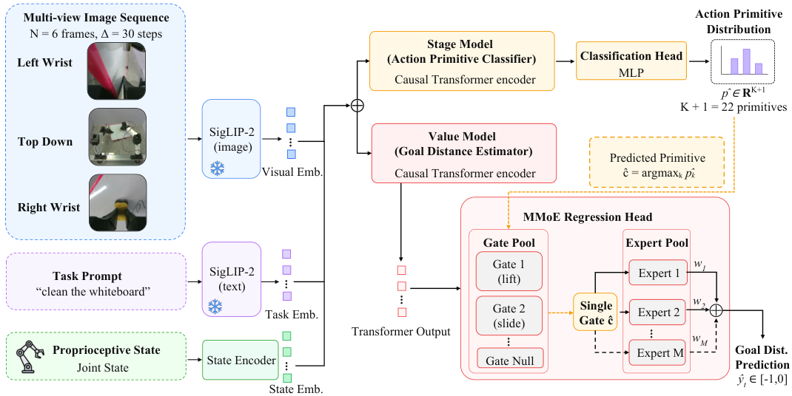
SARM은 stage-aware reward modeling이 long-horizon task에서 정확한 progress estimation을 가능하게 함을 보였지만, 그 stage estimator는 task-specific annotation에 의존하며 새로운 task마다 재학습해야 한다. 본 연구에서는 대신 action primitive를 task-agnostic intermediate representation으로 사용한다. Annotation된 10,000시간 이상의 manipulation data로 구성된 내부 corpus에서 얻은 다음 두 가지 관찰이 이러한 설계의 근거가 된다. (1) 거의 모든 task의 demonstration은 task name, scene, object의 차이에도 불구하고 task 전반에서 반복적으로 나타나는 action primitive sequence로 분해된다. (2) primitive vocabulary는 비교적 작고, 많은 primitive가 의미적으로 유사하거나(예: pour/dump) 하나의 task에서 함께 나타나는 경우가 드문 dual pair를 이루므로(예: pull/push), 추가적인 compression이 가능하다.
100개 task에 걸친 실제 환경의 manipulation data 200시간을 선별했다. Consolidation 후 전체 task duration의 90%를 초과하여 포괄하는 K = 21개의 action primitive를 식별했다. Source dataset을 annotation boundary에 따라 분할하고, (i) 각 primitive가 tk = 3시간을 기여하며 (ii) primitive별 source-task diversity를 최대화하는 balanced dataset DAP를 구축하여, 총 (K + 1) · tk = 66시간의 segment를 얻었다. 추가된 null class는 reset behavior와 출현 빈도가 낮은 action primitive를 포함한 나머지 모든 long-tail sample로 구성한다. 구축 세부 사항은 Appendix 6.4에 제시한다.
Stage estimation을 primitive vocabulary와 null class에 대한 temporal classification 문제(K + 1 = 22개 class)로 정의한다. 시간 t에서 모델은 stride Δ = 30으로 sampling한 최근 N = 6개 frame(30 Hz에서 약 6초의 context)을 입력받는다. v ∈ {wristL, wristR, top}인 세 개의 view를 사용하며 이를 It(v)로 나타내고, proprioceptive state st도 함께 사용한다. 각 frame은 frozen SigLIP-2 encoder ϕ로 encoding하며, st는 MLP ψ로 projection한다. 모든 token은 4-layer causal Transformer fθ로 처리한 뒤 linear head gθ를 거쳐 class logit pt = softmax(gθ(ht))를 생성한다. 모델은 DAP에서 cross-entropy로 학습하며, hyperparameter의 전체 세부 사항은 Appendix 6.3에 제시한다.
Stage estimator를 기반으로 dense하고 stage-conditioned인 goal-distance를 추정하는 multi-task value model을 설계한다. Primitive마다 visual dynamics와 progress signature가 현저히 다르므로, monolithic value head는 interference와 tail underfitting 문제를 겪는다. 이를 해결하기 위해 공통 expert pool을 공유하면서 primitive group별로 specialization하는 multi-gate Mixture-of-Experts(MMoE) decoder를 사용한다.
Value model은 자체적인 6-layer causal Transformer backbone을 사용하며, stage estimator의 4-layer Transformer와 별도로 학습한다. 두 모델은 frozen SigLIP-2 encoder와 caching된 6-frame embedding만 공유하며, 이에 따라 inference 시 중복되는 visual encoding을 제거한다. Step t에서 value model은 (1) three-camera frame, (2) proprioceptive state st, (3) task-name text embedding etask, (4) stage estimator가 예측한 ỹt의 predicted-primitive embedding eprim을 입력받는다. SARM을 따라 input frame sequence는 첫 번째 episode frame(visual anchor), stride Δ = 30인 최근 여섯 개 frame, 그리고 implicit negative로 사용하는 최대 세 개의 rewinding frame을 연결한다. Rewinding frame은 모델이 monotonic time-index predictor로 붕괴하는 것을 방지한다.
K + 1개의 primitive를 공유되는 visual/motion pattern에 따라 M + 1개의 semantic group으로 분할한다(Appendix 6.4 참조). MMoE를 따라 각 group에는 E개 expert로 구성된 shared pool에 대한 전용 gate Gm이 있으며, 각 expert는 3-layer MLP이다. Step t의 active gate는 m(ỹt)에 의해 선택되며, top-k routing weight와 다음의 MoE output을 생성한다.
oₜ = Σₑ₌₁ᴱ gₜ,ₑ^(m(ỹₜ)) · Eₑ(hₜ), gₜ^(m) = TopK(softmax(Wₘhₜ)). (1)
Group-conditioned routing은 명시적인 inductive bias를 제공한다. 서로 다른 group의 primitive는 별도의 gate를 사용하지만 shared expert에는 계속 접근할 수 있다. Router collapse를 방지하기 위해 gate별 balance auxiliary loss와 entropy auxiliary loss(Lbalance, Lentropy)를 추가한다. 전체 수식과 ablation은 Appendix 6.8 및 6.10에, hyperparameter의 전체 세부 사항은 Appendix 6.3에 제시한다.
π0.6을 따라 value model은 completion까지 남은 step을 정규화한 값 rt⋆ = −(T − t)/T ∈ [−1, 0]을 예측한다. 이 방식이 horizon이 다양한 rollout에서 fine-tuning하기 더 쉽다는 것을 확인했다. 전체 objective는 MSE term과 auxiliary loss를 결합한다.
L = E_D[(r̂ₜ − rₜ⋆)²] + λ_bal L_balance + λ_ent L_entropy. (2)
Section 3.1.1의 reward model을 SPIRAL(Self-Policy Improvement via Reward-Aligned Learning)에 통합한다. SPIRAL은 on-policy rollout과 reward-guided residual RL을 통해 VLA policy를 반복적으로 개선하는 closed-loop framework이다. SPIRAL은 residual-RL substrate로 DICE-RL의 distribution contractive RL fine-tuning scheme을 채택한다. 이 scheme은 flow policy와 residual policy에 대해 여러 latent noise를 sampling하여 동일한 observation에서 다양한 action을 생성하며, 이를 통해 안정적이고 sample-efficient한 실제 로봇 학습을 위한 제어된 exploration space를 유도한다.
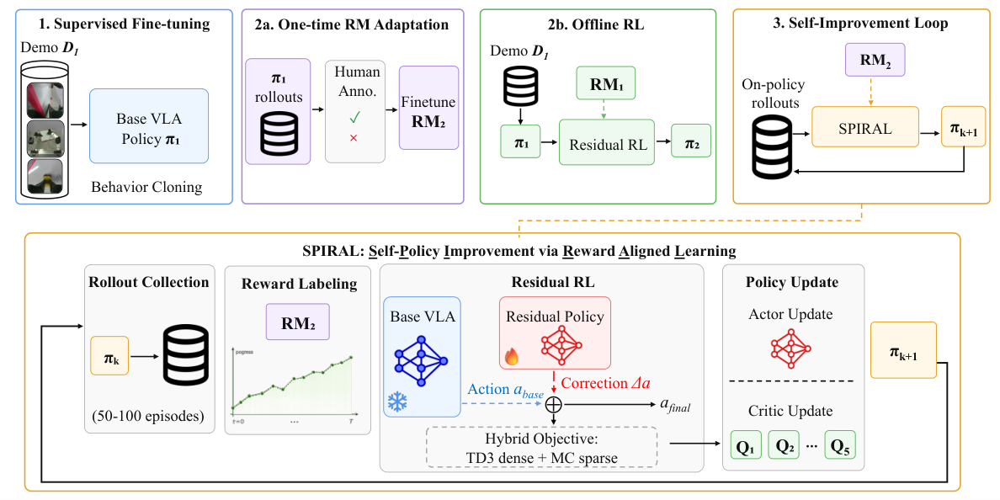
이 기반을 조밀한 stage-aware reward와 정렬하고 장기 horizon에 대응할 수 있도록 한다. 그러나 SPIRAL을 규정하는 핵심 수정 사항은 두 가지이다. (i) TD3 objective는 sparse terminal reward 대신 본 연구의 multi-task reward model이 제공하는 조밀한 per-step reward를 사용하며, (ii) 이 dense-reward TD3 objective를 sparse episode-level reward로 구동되는 Monte Carlo(MC) objective와 결합한다. 자세한 내용은 6.14절에서 설명한다. 아래에 기술하는 자율적인 rollout-relabel-update 루프와 함께, 이러한 수정은 sparse-reward residual-RL 방식을 자기 개선형 로봇 데이터 flywheel로 전환한다.
DICE-RL을 따라, value overestimation을 완화하기 위해 critic을 N = 5개의 chunk 기반 Q-function ensemble {Qϕn}n=1N으로 구성하며, 표준 TD3와 마찬가지로 target network와 target-policy smoothing을 사용한다. dense reward rtdense는 본 연구의 reward model이 제공하며, ytTD의 bootstrap action은 πθ′(st+1) + ϵ으로 생성한다. 여기서 ϵ ∼ clip(𝒩(0, σ²), −c, c)이며, critic loss는 N개 ensemble member 전체에 걸쳐 합산한다. 이어서 residual actor를 TD3+BC 방식의 objective로 학습한다.
minθ 𝔼s∼D, z∼𝒩(0,I)[−Qϕ(s, a) + β ‖sθ(s, z)‖22], (3)
여기서 가중치 β = 30인 BC regularizer는 residual이 pretrained policy에 가깝게 유지되도록 하는 한편, Qϕ는 개선된 edit을 장려한다. Sun과 Song의 multi-sample expectation training을 따라, 방문한 각 state에서 flow prior로부터 κ개의 latent sample {zj}j=1κ ∼ 𝒩(0, I)를 추출하고, candidate action chunk a(j) = πpre(s, zj) + sθ(s, zj)를 구성한 뒤, 단일 추출값이 아니라 κ개의 candidate에 대해 critic TD target과 actor objective를 모두 평균한다. deployment 시에는 best-of-κ action selection을 적용하여 j⋆ = arg maxj Qϕ(s, a(j))인 a(j⋆)를 실행한다. 이 방식은 방문한 각 state를 κ개의 latent 추출값에 걸쳐 재사용하며, 단일 sample이 아니라 latent가 유도하는 전체 action distribution에 정렬된 저분산 신호를 제공한다.
전체 SPIRAL pipeline은 다음 네 stage에 걸쳐 policy rollout, reward model adaptation, residual RL을 번갈아 수행한다. (1) demonstration에서 VLA backbone을 BC fine-tuning하여 π1을 얻는다. (2) pretrained reward model RM1을 사용하여 초기 offline SPIRAL update를 수행하고 π2를 생성한다. (3) 가장 약한 policy인 π1의 rollout을 인간이 annotation하고 RM1 → RM2로 fine-tuning하여 rollout 분포를 포괄하는 일회성 reward model adaptation을 수행한다. (4) RM2로 새로운 rollout을 반복적으로 labeling하고 SPIRAL update를 통해 policy를 개선하는 자율 on-policy 루프를 수행하며, 추가적인 인간 label은 필요하지 않다. 프레임워크 시각화, algorithm, 상세 hyperparameter, 설계 선택, 실제 적용 시 고려 사항은 그림 3, Algorithm 1, 부록 6.3 및 부록 6.14를 참조한다.
본 연구는 다음 세 가지 질문을 중심으로 SARM2와 그 자기 개선 프레임워크를 실증적으로 검증한다. Q1. action-primitive stage estimator와 MMoE가 장기 horizon 및 compositional task에서 value modeling 정확도를 향상하는가? Q2. SPIRAL은 rollout을 통해 policy를 개선하고 BC 및 offline RL baseline을 능가하는가? Q3. reward-model 품질이 manipulation data flywheel에 중요한 이유는 무엇인가?
Task Suite, Baseline 및 Ablation. 10개의 manipulation task를 두 subset으로 나누어 평가한다. S1은 pick-and-place, cloth folding 등 general reward-model training data의 대부분을 차지하는 5개의 고전적 task로 구성되며, S2는 tool use 또는 multi-stage compositional execution이 필요한 5개의 비전형적 task로 구성된다. 자세한 내용은 부록 6.2에 제시한다. Baseline은 다음과 같다. ReWiND(RW)는 동일한 10개 task에서 처음부터 학습하며 stage estimator와 MoE를 사용하지 않는다. TOPReward(TR)와 Robometer(RM)는 범용 VLM 기반 reward model이다. TOPReward에는 Qwen3-VL-8B-Instruct variant를 사용한다. Robometer에 대해서는 공식 방식을 따라 본 연구의 10-task data로 2000 step 동안 LoRA fine-tuning한 variant(RM-FT)도 시험한다. full fine-tuning은 실용적이지 않으며, LoRA만으로도 본 연구 모델의 약 2배에 해당하는 VRAM이 필요하다. Ablation은 다음과 같다. w/o SE는 ReWiND에 single-gate MoE를 적용하되 stage estimation을 제거한다. w/o MG는 multi-gate inductive bias를 제거한 single-gate SARM2이다. S1 Var.는 S1에서만 학습한 SARM2이다.
평가 및 분석. (i) 10개 task 전체의 held-out human demonstration과 (ii) downstream policy를 학습한 2개 task의 policy rollout에서 평가하며, MoE 구조를 갖는 모든 모델에 대해 MoE routing diagnostic을 추가로 보고한다. 전체 protocol은 부록 6.6에 제시한다. 표 1은 몇 가지 일관된 양상을 보여준다. SARM2는 두 task subset과 전체에서 가장 낮은 demonstration MSE(S1에서 0.006, S2에서 0.031, 통합 시 0.020)를 달성하며, 더 어려운 T2에서도 가장 높은 rollout classification score(ρ = 0.667)를 달성한다. 다음 네 가지 관찰 결과를 강조한다.
| Metrics | RW | TR | RM | RM (FT) | w/o SE | w/o MG | S1 Var. | SARM2 |
|---|---|---|---|---|---|---|---|---|
| Demo L ↓ | ||||||||
| S1 | 0.026 | 0.090 | 0.067 | 0.032 | 0.025 | 0.010 | 0.010 | 0.006 |
| S2 | 0.044 | 0.120 | 0.113 | 0.052 | 0.040 | 0.038 | N/A | 0.031 |
| Overall | 0.036 | 0.107 | 0.093 | 0.043 | 0.034 | 0.026 | N/A | 0.020 |
| Rollout ρ ↑ | ||||||||
| T1 | 0.167 | −0.222 | 0.222 | 0.667 | 0.556 | 0.611 | 0.889 | 0.833 |
| T2 | 0.222 | −0.444 | −0.111 | 0.000 | 0.556 | 0.333 | N/A | 0.667 |
| MoE Density | ||||||||
| N/A | N/A | N/A | N/A | 0.87 | 0.42 | 0.23 | 0.10 | |
(1) 범용 VLM 기반 reward model은 조밀한 value estimation에서 성능이 낮다. 강력한 semantic generalization에도 불구하고 TOPReward와 Robometer는 S1에서 SARM2보다 4–6배 높은 demo loss를 보이고 rollout classification에서도 낮은 성능을 나타내며, 이는 주로 지나치게 낙관적인 estimation에 기인한다. 시각화는 그림 7을 참조한다. 본 연구의 10-task dataset에서 Robometer를 LoRA fine-tuning하면 demo loss와 rollout score가 모두 크게 향상되어 처음부터 학습한 ReWiND에 가까워진다. 그러나 규모가 한 order 더 큼에도 불구하고(약 4B 대 약 200M parameter) 여전히 처음부터 학습한 모든 in-domain baseline보다 성능이 낮다. 이는 두 요인에 기인한다고 본다. 첫째, LoRA는 update 가능한 parameter subspace를 제한하여 세밀한 temporal pattern에 대한 adaptation을 제약한다. 둘째이자 더 근본적으로, VLM pretraining은 dense reward modeling이 요구하는 motion-level temporal discrimination이 아니라 거친 semantic alignment를 최적화한다.
(2) Stage estimation과 MMoE는 각각 유익하며 서로 상승효과를 낸다. stage estimator를 제거하면(w/o SE) demo loss가 0.020에서 0.034로 증가하고, multi-gate 설계를 제거하면(w/o MG) 0.026으로 증가한다. 전체 SARM2 모델은 두 경우보다 모두 크게 향상되며, 이는 stage-awareness와 multi-gate routing이 상보적 구조를 포착함을 보여준다. 즉, stage estimator는 task의 primitive sequence 내에서 모델의 위치를 특정하고, MMoE는 primitive-group 경계를 따라 capacity를 할당한다.
(3) 더 폭넓은 task distribution에서의 학습은 성능을 향상한다. 단순 subset에서만 학습한 S1 Var. ablation은 S1에서 0.010의 demo loss를 달성하여 모든 baseline보다 우수하지만, 두 subset을 모두 학습에서 접하는 전체 SARM2(0.006)보다는 여전히 1.7배 높다. 이는 S2에서 S1으로의 positive transfer를 나타내며, 그 이유는 S2가 S1과 공유하는 progress signal을 명확히 구분하는 데 도움이 되는 더욱 다양한 action primitive와 visual context를 모델에 제공하기 때문일 가능성이 크다.
(4) MoE routing health는 downstream 성능과 상관관계가 있다. MoE Density 행은 식 6에서 정의한 normalized top-k routing score Sroute ∈을 보고하며, 0은 완벽하게 균형 잡힌 router에, 1은 완전히 collapse된 router에 해당한다. w/o SE는 collapse에 가장 가깝다(Sroute = 0.87). primitive-conditioned gating이 없으면 router가 대부분의 token을 소수의 expert subset으로 몰아넣는다. w/o MG는 훨씬 건전하지만(0.42) 여전히 집중되어 있는데, 이는 하나의 shared gate가 primitive group을 분리할 수 없기 때문이다. 두 SARM2 variant는 모두 균형이 잘 잡혀 있으며(S1 Var.는 0.23, 전체 SARM2는 0.10), 그 순위는 rollout score와 일치한다. 이는 primitive-conditioned multi-gate routing이 router collapse를 직접 완화한다는 본 연구의 주장을 뒷받침한다.
과제 및 평가 프로토콜. SARM2 기반 자기 개선을 평가하기 위해 대표 과제 두 가지, 즉 S1의 고전적 과제 하나와 S2의 비관습적 과제 하나를 선택한다. 전체 설명은 부록 6.2에 제시한다. 과제 1(고전적): Folding Shorts는 긴 지평의 변형 가능 물체 조작 과제이다. 20시간/670개 에피소드(각 60–180초, 품질 필터링 없음)를 사용하고, Flat(제한 시간 2분)과 Crumpled(제한 시간 4분,에 따르면 더 어려움)라는 두 하위 과제의 성공률을 보고하며, 3가지 반바지 색상에 걸쳐 각각 12회 시험한다. 과제 2(비관습적): Cleaning Whiteboard는 지우개를 잡고, 다른 손으로 기울어진 화이트보드를 안정화하고, 모든 글자를 지운 뒤 멈추는 과제이다. 기본 정책은 10시간/530개 에피소드로 학습한다. 보드의 50–70%를 차지하도록 글자 5–10개를 그리며, 제한 시간은 2분이다. 각 에피소드는 잡기, 부분 청소, 완전 청소, 올바른 종료를 추적하는 5단계(0/25/50/75/100%)로 채점한다. 자세한 내용은 부록 6.7을 참조한다. 4개 구성(지우개 색상 2개 × 보드 프레임 2개)을 각각 5개 에피소드로 평가한다(총 20개).
베이스라인. 학습 데이터 출처에 따라 두 그룹으로 구분한다. 시연 전용 그룹은 BC(π0.5에서 미세 조정한 기본 BC 정책), RA-BC(SARM2의 스텝별 보상을 사용하는 가중 BC), RL-Sparse(시연의 종단 보상 = 1인 DICE-RL), RL-Dense(SARM2 밀집 보상을 사용하는 SPIRAL)로 구성된다. 롤아웃 기반 자기 개선 방법은 모두 RL-Dense 시연 체크포인트에서 시작하며, 보상 출처만 서로 다르다. 보상 출처는 Sparse(사람이 기록한 종단 성공), RM (FT)(LoRA로 미세 조정한 Robometer의 밀집 레이블. 이 모델은 10개 과제 데이터셋과 레이블이 지정된 롤아웃 모두에서 미세 조정하며, SARM2와 정확히 동일한 절차를 사용한다), SARM2 (ours)(본 연구의 밀집 레이블)이다. 알고리즘 1의 Round 3 이후 결과를 보고한다. 각 라운드에서 정책은 학습에 사용한 롤아웃을 생성한 체크포인트로 초기화하여, 보상 출처 간 공정한 온-정책 비교를 보장한다.
분석. 표 2와 그림 4는 세 가지 결과를 보여준다.
| 학습 방법 | Folding Shorts (SR ↑) | Cleaning Whiteboard | |||
|---|---|---|---|---|---|
| Flat | Crumble | SR ↑ | Avg. Prog. ↑ | Prog. Gain ↑ | |
| 시연 전용(Demo only) | |||||
| BC | 1/12 | 0/12 | 4/20 | 0.475 | N/A |
| RA-BC | 6/12 | 5/12 | 10/20 | 0.775 | 0.300 |
| RL-Sparse | 4/12 | 2/12 | 6/20 | 0.625 | 0.150 |
| RL-Dense | 7/12 | 4/12 | 10/20 | 0.813 | 0.338 |
| 롤아웃 기반(Rollout based) | |||||
| Sparse | 7/12 | 2/12 | 11/20 | 0.825 | 0.350 |
| RM (FT) | 10/12 | 5/12 | 13/20 | 0.888 | 0.413 |
| SARM2 (ours) | 12/12 | 8/12 | 18/20 | 0.975 | 0.500 |
(1) SPIRAL은 효과적인 오프라인 RL 백본이다. 시연 전용 학습에서 RL-Dense는 Folding-Shorts Flat에서 7/12(BC는 1/12, RL-Sparse는 4/12)를 달성하고, Cleaning Whiteboard에서는 진행도 81.3%로 10/20(RL-Sparse는 62.5%로 6/20)을 달성한다. SR에서 RA-BC와의 격차는 작지만, RL-Dense는 더 어려운 하위 과제에서 더 잘 일반화하고 정성적 관찰에서 더 부드러운 움직임을 보인다. 이는 가치 부트스트랩과 결합된 밀집 보상이 종단 희소 보상이나 보상 가중 모방보다 더 강한 최적화 신호를 제공함을 나타낸다.
(2) SPIRAL은 보상 정렬 자기 개선을 통해 오프라인 베이스라인을 넘어선다. 모든 롤아웃 기반 방법은 동일한 RL-Dense 체크포인트에서 시작한다. 세 라운드 후 SARM2 밀집 보상을 사용하는 SPIRAL은 모든 지표에서 모든 오프라인 베이스라인을 능가하여, Flat에서 12/12, Crumpled에서 8/12, Whiteboard에서 진행도 97.5%로 18/20을 달성한다. 그림 4는 라운드가 진행됨에 따라 향상이 단조롭게 누적됨을 보여준다. 이는 온-정책 자율 롤아웃이 오프라인 RL만으로 얻는 수준을 크게 넘어 정책을 개선할 수 있음을 확인하며, SPIRAL이 실제 로봇 자기 개선 프레임워크로 유효함을 입증한다.
(3) 데이터 플라이휠의 병목은 보상 모델의 품질이다. 가장 어려운 설정인 Folding Shorts Crumpled가 이를 진단적으로 보여준다. 희소 종단 보상으로 학습하면 RL-Dense 체크포인트의 성능이 4/12에서 2/12로 저하된다. 단일 종점 신호로는 약 3분에 이르는 펴기 단계 전반에 걸쳐 크레딧 할당을 수행할 수 없고, 루프가 결함 있는 롤아웃을 강화하여 플라이휠을 역방향으로 돌리기 때문이다. Robometer (FT) 밀집 보상은 더 나은 결과를 내지만 여전히 SARM2에 큰 격차로 뒤처진다(Flat 10/12 대 12/12, Crumpled 5/12 대 8/12, Whiteboard 13/20 대 18/20). 이는 밀집성만으로는 충분하지 않음을 보여준다. 효과적인 로봇 자기 개선 루프를 위해서는 보상 모델이 현재 롤아웃 상태를 충실하게 반영하여 실제 진전, 교정 조정, 실수를 구별해야 한다. 시각화는 그림 8과 9에 제시한다.
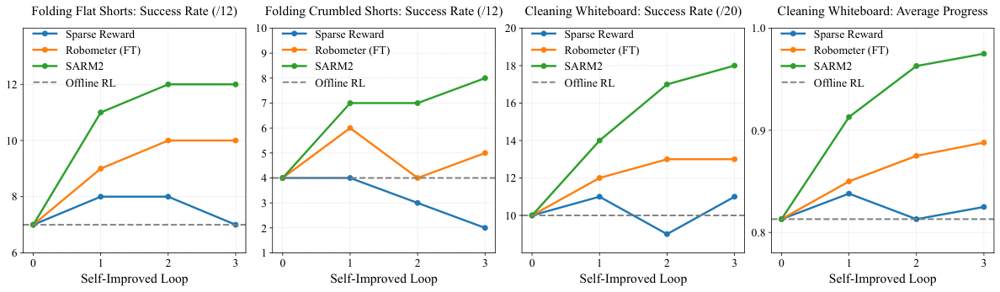
본 연구에서는 과제 비종속적 행동 프리미티브 단계 추정기와 다중 게이트 MoE 가치 디코더를 통합하여, 단일 모델로 긴 지평 조작 과제 전반에 걸쳐 밀집되고 정확한 보상을 생성하는 다중 과제 단계 인식 보상 모델 SARM2를 제시한다. SARM2를 기반으로 구축한 SPIRAL은 이러한 밀집 보상을 보상 정렬 온-정책 자기 개선 루프로 전환하여, 저비용 자율 롤아웃을 통한 지속적인 정책 개선을 가능하게 한다. 10개 과제 벤치마크에서 SARM2는 시연 MSE와 롤아웃 분류에서 과제별 베이스라인 및 VLM 기반 베이스라인을 능가하며, 제거 실험은 단계 인식, 다중 게이트 라우팅, 학습 분포 다양성이 각각 기여함을 보여준다. SPIRAL에 결합된 SARM2는 Folding Shorts와 Cleaning Whiteboard에서 상당한 향상을 이끌어내며, 보상 품질이 자립형 로봇 데이터 플라이휠을 지탱하는 핵심 요소임을 입증한다.
한계. 본 접근법에는 세 가지 주요 한계가 있다. (1) 신체 구현 범위. 행동 프리미티브 어휘는 양팔 탁상 데이터셋에서 도출되므로, SARM2를 모바일 조작이나 다른 신체 형태로 확장하려면 프리미티브 집합을 재구축하고 단계 추정기를 재학습해야 한다. (2) 잔차 RL의 상한. SPIRAL은 VLA 가중치를 업데이트하는 대신 잔차 RL을 통해 정책을 개선한다. 이는 행동 수준 및 모달리티별 교정에는 충분하지만, 의도 또는 과제 분해 수준의 오류를 수정할 수 없으며, 그러한 오류에는 잔차 RL을 넘어서는 메커니즘(예: VLM 미세 조정)이 필요하다. (3) 샘플 효율성. 온-정책 롤아웃 수집은 여전히 상대적으로 샘플 효율성이 낮으며, 롤아웃 사이의 일상적인 재설정에는 여전히 사람 조작자가 필요하다.
실세계 실험에는 양팔 tabletop robot platform을 사용한다. system은 다음과 같이 구성된다.
Demonstration data는 leader-follower GELLO teleoperation system을 통해 수집한다. Environment는 30 fps로 기록하며, left wrist, right wrist, fixed top view의 세 camera view에서 동기화된 stream을 포함한다. 또한 robot joint angle과 명령된 joint-angle action도 기록한다.
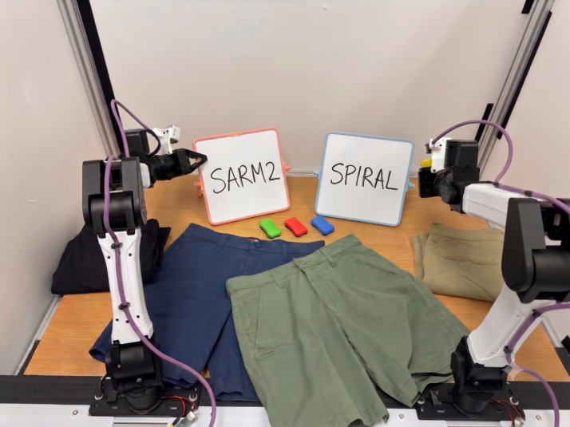
평가 task 10개를 subset별로 묶어 아래에 모두 설명하며, 해당 시각화는 그림 6에 모아 제시한다. S1(classic)은 pick-and-place task 2개, cloth-folding task 2개, plug 뽑기로 구성되며, 모두 일반적인 reward-model training distribution에서 지배적으로 나타나는 primitive와 잘 부합한다. S2(unconventional)는 나머지 5개 task로 구성되며, tool 사용, deformable 또는 articulated object 조작, multi-stage compositional execution을 요구한다. 하나의 episode 안에서 같은 action sequence가 여러 차례 반복되는 pick-and-place와 같은 task에서는 table이 빌 때까지 robot이 해당 sequence를 반복해야 한다.
Plate를 집어 bin에 넣기. 여러 장의 plate가 board 위에 놓여 있으며, robot은 이를 한 번에 하나씩 치워야 한다. 각 cycle에서 robot은 먼저 board 중앙의 plate를 집은 다음 plastic bin에 넣는다. Board에 plate가 하나도 남지 않을 때까지 이 cycle을 반복한다.
Plate를 집어 dish rack에 놓기. 이 task는 bin task의 변형으로, 각 plate를 dish rack의 slot에 수직으로 삽입해야 한다. 따라서 gripper와 rack opening 사이의 정밀한 pose alignment가 필요하다. 각 cycle에서 robot은 먼저 board에서 plate를 집은 다음 dish rack의 빈 slot에 삽입한다. Board가 빌 때까지 이 cycle을 반복하며, 일반적으로 episode당 5~10회의 삽입 cycle이 필요하다.
T-shirt 접기. 이는 long-horizon deformable-object task이다. Robot은 먼저 pile에서 T-shirt를 잡아 board 중앙으로 옮긴다. 그런 다음 옷을 평평하게 펴고 연속으로 두 번 접는다. 마지막으로 깔끔하게 접은 T-shirt를 board corner에 놓고 두 gripper를 모두 reset한다. 펴기 stage가 가장 길고 시각적 variation도 가장 큰 반면, 접기 stage는 bimanual이며 coordinated pinch grasp를 요구한다.
Shorts 접기. 이 task의 절차는 T-shirt 접기와 거의 동일하다. Robot은 먼저 pile에서 shorts를 잡아 board 중앙으로 옮긴다. 그런 다음 옷을 평평하게 펴고 연속으로 두 번 접은 뒤, 마지막으로 접은 shorts를 board corner에 놓는다.
Socket에서 plug 뽑기. Robot은 먼저 board 위 초기 위치에 있는 power strip을 작업하기 더 편한 위치로 옮긴다. 그런 다음 socket에서 plug를 하나씩 뽑아 board 중앙에 놓는 과정을 반복한다. Plug를 몇 개 뽑은 뒤에는 남은 plug가 더 접근하기 쉬운 각도로 드러나도록 power strip을 다시 옮길 수 있으며, 이후 plug를 뽑아 놓는 cycle을 계속한다. 모든 plug를 power strip에서 뽑고 power strip을 board 중앙에 다시 놓으면 episode가 종료된다.
Whiteboard eraser로 whiteboard 닦기. 한쪽 arm은 task 내내 작은 whiteboard를 단단히 잡아 안정화하고, 다른 arm은 board 중앙에 놓인 whiteboard eraser를 가져온다. 그런 다음 잡고 있는 arm이 whiteboard 표면을 드러내도록 기울이고, 다른 arm이 whiteboard의 글자를 닦는다. 다 닦은 뒤 robot은 eraser를 board 중앙에 다시 놓고, 마지막으로 whiteboard를 원래 위치로 되돌린다. Task 전 과정이 bimanual이며, 한쪽 arm이 기울어진 whiteboard를 안정화하는 동안 다른 arm이 닦는 motion을 수행한다.
Dinner table 차리기. 이는 deformable manipulation과 multi-object placement를 결합한 composite long-horizon task이다. Robot은 먼저 workspace에 tablecloth를 펼치고 그 중앙에 plate를 놓는다. 그런 다음 right arm으로 glass를 집어 적절한 위치에 내려놓는다. 마지막으로 utensil을 배치한다. 이때 각 utensil(knife와 fork)을 최종 배치 전에 적절한 gripper로 옮기기 위해 left-to-right 및 right-to-left hand-over를 수행한다.
Broom으로 종이 조각 쓸기. Robot은 먼저 board 중앙에서 broom을 집고, 안정적으로 쥐어 사용할 수 있는 grasp를 확보하기 위해 필요에 따라 한 번 이상의 bimanual hand-over를 수행한 다음, 다른 arm으로 dustpan을 집는다. Task의 주된 부분은 길게 반복되는 cycle이다. Robot은 board 중앙의 종이 조각을 쓸어 dustpan에 담고, dustpan에 담긴 조각을 trash bin에 버린다. 종이 조각이 하나도 남지 않을 때까지 이 sweep-gather-dump cycle을 반복한 뒤, dustpan과 broom을 board 위에 다시 놓는다.
Headphone 감아 정리하기. 이는 높은 정밀도를 요구하는 task이다. Robot은 먼저 board 중앙에서 headphone 한 쌍을 집는다. 그런 다음 headphone 본체 주위에 cable을 감는 긴 bimanual wrapping motion을 수행한다. 감기가 끝나면 정리된 headphone을 board 중앙에 다시 놓고 두 arm을 모두 reset한다.
Umbrella 접어 넣기. 이는 multi-stage articulated-object task이다. Robot은 먼저 board 중앙에서 펼쳐진 umbrella를 집어 right arm에서 left arm으로 넘긴다. 그런 다음 snap button을 runner에 눌러 canopy를 해제하고 shaft를 눌러 umbrella를 접는다. 이어서 canopy를 정돈하고 자연스러운 crease를 따라 접는다. 마지막으로 canopy를 shaft 주위에 말고 strap을 잡아 velcro를 고정한 뒤, 닫힌 umbrella를 board 중앙에 다시 놓는다.
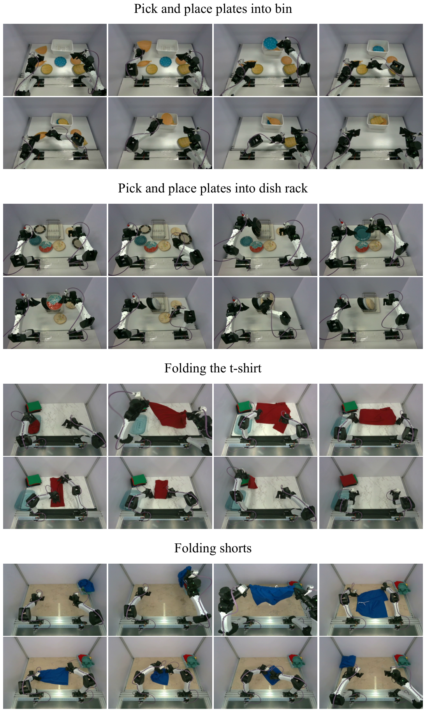
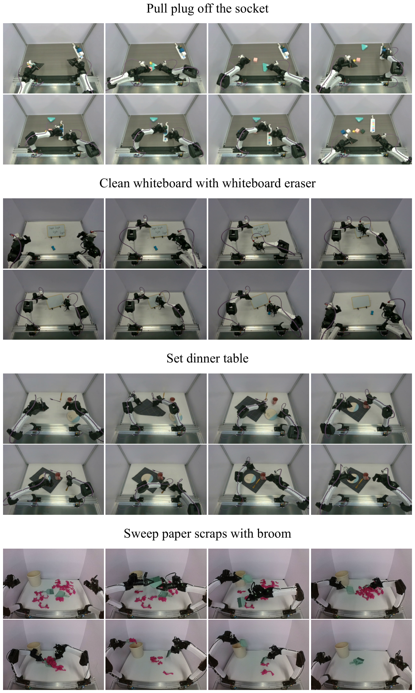
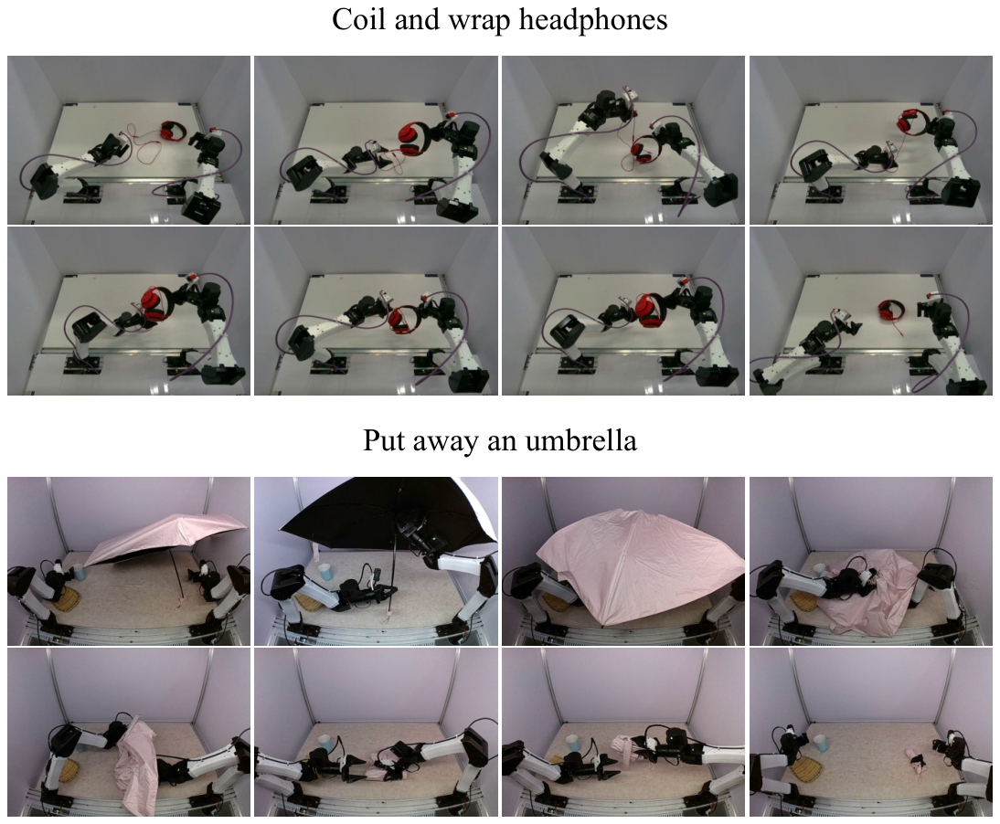
표 3은 본문에서 도입한 모든 hyperparameter를 하나로 정리하며, action-primitive stage estimator, multi-gate MoE value decoder 및 SPIRAL 자기 개선 loop를 포괄한다.
| 기호 | 설명 | 값 |
|---|---|---|
| Action-primitive stage estimator | ||
| K | Action primitive 수 | 21 |
| N | Timestep당 최근 context frame 수 | 6 |
| ∆ | Frame sampling stride | 30 |
| LAP | Transformer encoder layer 수 | 4 |
| d | Transformer hidden dimension | 512 |
| tk | DAP에서 primitive당 data 시간 | 3 |
| lrAP | Learning rate | 5 × 10−5 |
| BAP | Batch size | 96 |
| TAP | Training step 수 | 10,000 |
| optAP | Optimizer | AdamW |
| Multi-gate MoE value decoder | ||
| LVD | Transformer encoder layer 수 | 6 |
| M | Primitive group(gate) 수 | 8 |
| E | Shared pool의 expert 수 | 10 |
| k | Timestep당 top-k routing | 2 |
| dexp | Expert hidden width | 256 |
| nh × dexp | Expert MLP shape(depth × width) | 3 × 256 |
| λbal | Load-balance auxiliary loss weight | 2.5 |
| λent | Entropy auxiliary loss weight | 0.5 |
| Nrw | Rewinding frame 수 | 3 |
| lrVD | Learning rate | 5 × 10−5 |
| BVD | Batch size | 64 |
| TVD | Training step 수 | 10,000 |
| optVD | Optimizer | AdamW |
| Behavior Cloning | ||
| h | Action chunk horizon | 50 |
| lrBC | Learning rate | 5 × 10−5 |
| BBC | Batch size | 32 |
| TBC | Training step 수 | 30,000 |
| wdBC | Weight decay | Cosine |
| optBC | Optimizer | AdamW |
| SPIRAL 자기 개선 | ||
| γ | Discount factor | 0.9995 |
| α | Jcritic에서 MC objective의 weight | 0.5 |
| β | Residual actor loss에서 BC regularizer의 weight | 30 |
| Ncritic | Critic ensemble size | 5 |
| σ | Target-policy smoothing noise의 standard deviation | 0.2 |
| c | Target-policy smoothing clip range | 0.5 |
| κ | State당 DICE multi-sample latent candidate 수(deployment 시 best-of-κ 적용) | 4 |
| nRL × dRL | Actor/Critic MLP shape(depth × width) | 3 × 1024 |
| τtgt | Target network soft-update rate | 0.005 |
| lrRL | Learning rate(actor / critic) | 1 × 10−4 |
| BRL | Batch size | 16 |
| TRL | Round당 training step 수 | 5,000 |
| optRL | Optimizer | AdamW |
K = 21개의 각 action primitive를 MMoE gate에 할당하기 위해, shared visual appearance와 end-effector motion pattern에 따라 이들을 M + 1 = 8개의 semantic group으로 clustering한다. 이에 따라 한 group 내의 primitive는 유사한 progress signature를 나타내며, 동일한 gate의 routing distribution을 공유하는 것이 타당하다. 표 4는 이렇게 구성한 group, 각 group에 속한 primitive 및 각 group이 포착하는 motion pattern에 대한 간략한 설명을 제시한다.
| Group 이름 | Action Primitive | 설명 |
|---|---|---|
| Acquire | scoop, pull, pick/grab | Target object를 초기 support surface에서 들어 올리거나 이동하여 robot의 control 아래 둔다. |
| Release | place, pour/dump | Control 중인 object를 target location, container 또는 support surface로 내려놓는다. |
| Translate | erase, zip/unzip, sweep, pass | End-effector 또는 object를 주로 linear trajectory를 따라 이동한다. |
| Insert | install, insert | Spatial alignment를 유지하면서 object를 제약된 target region 안으로 유도한다. |
| Shape Clothes | hang, fold/flatten | Cloth-like object를 원하는 geometric state 또는 arrangement로 재구성한다. |
| Rotate | wrap, roll, tie/untie, rotate/turn | Angular motion을 통해 object의 orientation 또는 configuration을 변경한다. |
| Force | clamp, press | Gripper 또는 end-effector를 통해 제어된 contact force를 가한다. |
| Other | dummy | 주요 primitive taxonomy 밖의 정의되지 않았거나 task-specific한 action을 나타낸다. |
Algorithm 1 보상 유도 로봇 자기 개선 루프
입력: 인간 demonstration Ddemo; pretrained VLA model πVLA; pretrained multi-task reward model RM1; reward-model pretraining set DRM; 최대 iteration 수 N
출력: 개선된 policy πN+1
| 1: | // Stage 1: Behavior cloning |
| 2: | π1 ← FINETUNE(πVLA, Ddemo) ▷ 지도 BC fine-tuning |
| 3: | R1 ← ROLLOUT(π1, n=50–100) ▷ 가장 약한 policy에서 rollout을 수집한다 |
| 4: | // Stage 2a: Rollout distribution에 대한 일회성 reward model adaptation |
| 5: | R1labeled ← HUMANANNOTATE(R1) ▷ segment-level label + 최종 progress |
| 6: | Dadapt ← R1labeled ∪ SUBSAMPLE(DRM, 0.5) ▷ pretraining data의 50%를 혼합한다 |
| 7: | RM2 ← FINETUNE(RM1, Dadapt) ▷ pretraining cost의 약 1/10 |
| 8: | // Stage 2b: Pretrained reward model을 사용한 초기 residual RL |
| 9: | D̃demo ← LABELREWARDS(Ddemo, RM1) |
| 10: | π2 ← SPIRAL(π1, D̃demo) |
| 11: | R2 ← ROLLOUT(π2, n=100) |
| 12: | // Stage 4: On-policy self-improvement loop |
| 13: | for i = 2, 3, ..., N do |
| 14: | R̃i ← LABELREWARDS(Ri, RM2) |
| 15: | πi+1 ← SPIRAL(πi, R̃i) |
| 16: | Ri+1 ← ROLLOUT(πi+1, n=100) |
| 17: | if SUCCESSRATE(Ri+1) ≥ τsuccess then |
| 18: | break |
| 19: | end if |
| 20: | end for |
| 21: | return πi+1 |
시연 평가. Task마다 별도로 보류한 episode 10개를 sampling하고, 예측 progress와 ground-truth progress 사이의 frame별 mean squared error(MSE)를 보고한다. 제시의 명확성을 위해 S1과 S2의 MSE를 각각 보고하고 통합 score도 함께 제시한다. 통합 MSE는 평가한 모든 frame에 대한 micro-average로 계산하므로, 두 subset별 값의 산술평균이 아님에 유의한다.
Rollout 평가. SARM의 프로토콜에 따라 실제 robot platform에서 robot rollout의 progress 추정을 평가한다. 각 target task에서 π0.5 policy를 fine-tuning하고 서로 다른 training stage의 intermediate checkpoint를 배포하여, task마다 trajectory 36개로 이루어진 균형 잡힌 rollout set을 구성한다. 이는 successful episode(SE) 12개, partially successful episode(PSE) 12개, failed episode(FE) 12개로 구성된다. Reward model은 다음 기준에 따라 각 rollout을 분류한다.
Label = ⎧ SE, if P_final > 0.8 ∧ (Σ_{t=2T/3}^T P_t)/(T/3) > 0.6,
⎨ PSE, if (1/T)Σ_{t=1}^T P_t ≥ ξ,
⎩ FE, otherwise. (4)
식 (4) 읽기: Label은 최종 예측 progress Pfinal이 0.8보다 크고 trajectory 마지막 3분의 1 구간, 즉 t = 2T/3부터 T까지의 Pt 평균이 0.6보다 크면 SE이다. 그렇지 않은 경우 전체 trajectory에서의 평균 (1/T)Σt=1TPt가 ξ 이상이면 PSE이며, 그 밖의 경우에는 FE이다.
여기서 Pt는 frame t에서 예측한 progress를 나타내고, T는 trajectory length이며, ξ는 성공하지 못한 모든 rollout의 average progress에 대한 median으로 설정한다. 이 adaptive threshold는 PSE와 FE 예측을 동일한 수로 나누며, 고정 cutoff를 수동으로 tuning할 때 발생하는 bias를 방지한다.
또한 다음 score를 통해 rollout 분류 정확도를 요약한다.
ρ = (#correct − #incorrect)/36 ∈ [−1, 1]. (5)
식 (5) 읽기: ρ는 올바르게 분류한 rollout 수(#correct)에서 잘못 분류한 rollout 수(#incorrect)를 뺀 값을 전체 rollout 수 36으로 나눈 score이며, 그 범위는 −1부터 1까지이다.
이 score는 올바르게 분류한 각 rollout에 +1을, 그렇지 않은 각 rollout에 −1을 부여한 뒤 전체 rollout 수로 정규화한다. 완벽한 classifier는 ρ = 1을 달성하는 반면, 세 class 중 하나를 무작위로 추측하면 ρ ≈ −1/3이 된다.
MoE routing 진단. 모든 MoE 기반 reward model에 대해 다음과 같이 정의한 top-k routing score도 추가로 보고한다.
S_route = (r − 1)/(N/k − 1), r = (N/k)Σ_{i=1}^k p̄^(i). (6)
식 (6) 읽기: Raw concentration r은 i = 1부터 k까지의 i번째로 큰 평균 routing 확률 p̄(i)을 합한 뒤 N/k를 곱한 값이다. Routing score Sroute는 r − 1을 N/k − 1로 나누어 구한다.
여기서 N은 전체 expert 수이고, k는 token마다 활성화되는 expert 수이며, p̄(i)는 evaluation set에 걸쳐 평균한 routing distribution에서 i번째로 큰 entry이다. Raw concentration r은 균일한 baseline 1/N에 비해 top-k expert에 할당된 mass를 측정하며, 그 범위는 1(완전히 균형 잡힘)부터 N/k(완전히 collapse됨)까지이다. Affine normalization은 Sroute를로 rescaling하며, N과 k에 대한 의존성을 제거하므로 configuration 간 expert utilization을 직접 비교할 수 있다. 건전한 router에서는 Sroute가 1보다 현저히 작다.
Whiteboard 닦기—5단계 scoring. Cleaning Whiteboard 평가의 각 episode는 progress 5단계로 scoring한다. 글자를 하나도 지우지 못한 경우 0%이고, eraser를 성공적으로 잡고 board를 안정시킨 뒤 글자를 하나 이상 지운 경우 25%이다. 전체 글자의 절반을 초과하여 지웠지만 모두 지우지는 못한 경우 50%이고, 모든 글자를 지웠으나 올바르게 멈추지 못했거나 글자가 남은 상태에서 일찍 멈춘 경우 75%이다. 모든 글자를 지우고 eraser를 table 위에 내려놓고 board를 놓음으로써 올바르게 종료한 경우 100%이다. 보고하는 Avg. Prog. metric은 evaluation episode 20개 전체에 대한 단계 값의 평균이며, SR은 100% 단계에 도달한 episode만 집계한다.
아키텍처 비교를 동등한 조건에서 수행하기 위해, decoder 수준의 Mixture-of-Experts 모델(이하 MoE-Decoder)을 parameter 수가 유사한 dense baseline과 비교한다. 두 모델은 동일한 encoder backbone을 공유하며 reward-prediction head만 다르다. 이 head는 차원이 (N + 3)d = 3072인 fused feature vector에 timestep마다 한 번 적용되며, 여기서 N = 3개의 camera stream과 language, task 및 state token을 합하면 길이 T인 modality stream이 (N + 3) = 6개가 된다. Dense baseline은 width 512인 3-hidden-layer MLP를 사용하여 scalar reward를 계산한다. MoE-Decoder variant는 이 MLP를 E개의 deep expert로 구성된 sparse top-k mixture로 대체하며, 각 expert 자체는 width 256인 3-hidden-layer MLP이고 동일한 fused vector에 적용된다. MoE는 timestep마다 E = 10개의 expert 중 k = 2개만 활성화하므로, 적절한 비교 대상은 total parameter 수가 아니라 activated parameter 수이다. 이 configuration에서 MoE-Decoder는 activated parameter와 FLOPs 모두에서 Dense baseline과 약 10% 이내로 일치하므로(표 5 및 6), quality 차이는 capacity 또는 compute 여유가 아니라 sparse routing structure에 기인한다.
| 구성 요소 | 파라미터 |
|---|---|
| MoE-Decoder (활성화 기준) | |
| 활성 gate (LN, Linear 3072→10) | 0.04 M |
| 활성 expert (LN, Linear 3072→256, Linear 256→256×2, Linear 256→1) | 0.92 M |
| × k = 2개의 활성 expert | 1.85 M |
| MoE-Decoder 합계(활성화 기준) | 1.89 M |
| Dense baseline | |
| MLP head: LN, Linear 3072→512 | 1.58 M |
| Linear 512→512 (×2) | 0.53 M |
| Linear 512→1 | < 0.01 M |
| Dense 합계 | 2.11 M |
| MoE-Decoder / Dense (활성화 기준) | 0.90× |
| 구성 요소 | 호출당 FLOPs | Timestep당 호출 수 | Timestep당 FLOPs |
|---|---|---|---|
| MoE-Decoder | |||
| 활성 gate | 0.08 M | 1 | 0.08 M |
| 활성 expert (×k = 2) | 1.85 M | 2 | 3.70 M |
| MoE-Decoder 합계 | 3.78 M | ||
| Dense baseline | |||
| MLP head | 4.20 M | 1 | 4.20 M |
| Dense 합계 | 4.20 M | ||
| MoE-Decoder / Dense | 0.90× | ||
Default configuration인 T2E10은 가장 우수한 overall demo loss(0.020)와 가장 높은 T1 rollout success(0.833)를 달성하며, 이는 E = 10개의 expert에 대해 k = 2를 사용하는 설정이 이 sweep 내에서 사실상 optimum에 도달함을 보여준다. Multi-gate 설계와 load-balance auxiliary loss 덕분에 모든 variant는 유의미한 load score(0.02–0.20)를 유지하고 routing collapse를 피하므로, 관찰된 차이는 degenerate gating이 아니라 specialization quality를 반영한다. 실험적으로 top-k를 변경하는 경우(T1E10: 0.026, T4E10: 0.029), expert 수를 변경하는 것보다 overall demo loss가 더 크게 저하된다.
| Metrics | T1E10 | T4E10 | T2E5 | T2E20 | T2E10 (ours) |
|---|---|---|---|---|---|
| Demo L S1 ↓ | 0.015 | 0.018 | 0.016 | 0.011 | 0.006 |
| Demo L S2 ↓ | 0.033 | 0.037 | 0.032 | 0.031 | 0.031 |
| Overall ↓ | 0.026 | 0.029 | 0.024 | 0.022 | 0.020 |
| Rollout ρ T1 ↑ | 0.667 | 0.722 | 0.611 | 0.778 | 0.833 |
| Rollout ρ T2 ↑ | 0.556 | 0.5 | 0.5 | 0.722 | 0.667 |
| MoE Density | 0.02 | 0.13 | 0.20 | 0.12 | 0.10 |
top-k를 바꾸면(T1E10: 0.026, T4E10: 0.029) expert 수를 바꿀 때(T2E5: 0.024, T2E20: 0.022)보다 overall demo loss가 더 나빠진다. k=1은 안정적인 specialization에 필요한 중복성을 없애고, k=4는 expert를 지나치게 혼합해 routing signal을 희석한다. 반면 E 변경은 균형 잡힌 expert pool을 재분할할 뿐이다. 따라서 timestep별 MoE decoder에서는 routing sparsity가 raw expert budget보다 더 민감한 hyperparameter이다.
설정. 대규모 언어 모델에서 지배적인 MoE 구성법은 expert를 Transformer의 Feed-Forward Network(FFN) 하위 계층 안에 배치한다. 동일한 배치 방식이 multimodal reward modeling에도 적용되는지 알아보기 위해, 내부 MoE가 삽입되는 위치만 다르고 나머지는 모든 면에서 동일한 SARM2 MMoE value decoder의 두 변형을 비교한다.
두 변형은 동일한 SigLIP-2 feature, 동일한 6-layer causal Transformer backbone, 동일한 expert 수 E=10과 k=2, 그리고 동일한 primitive-group-conditioned MMoE outer gate를 공유한다. 이 outer gate는 3.1.2절과 같이 stage estimator가 예측한 primitive ỹt에 의해 선택된다. value-model backbone의 dense FFN 하위 계층은 표준 4× expansion을 따르므로 hidden width는 4dmodel = 4×512 = 2048이다. MoE-FFN에서 각 expert는 hidden width가 1024인 feed-forward block이며, token마다 k=2개가 활성화되므로 active hidden capacity는 1024×2 = 2048이다. 이는 dense FFN과 정확히 일치하므로 FFN 하위 계층에서 계산량과 capacity를 맞춘 비교이다. 내부 top-k router는 배치 위치에서 전달받는 vector의 content를 기반으로 동작한다. MoE-FFN에서는 하나의 (modality, timestep) hidden state이고, MoE-Decoder에서는 모든 modality를 concatenate한 fused timestep vector이다. 따라서 primitive-group specialization은 두 방식의 차이를 만드는 요인이 아니며, 유일하게 달라지는 것은 expert가 존재하는 하위 계층이다.
S1 및 S2 subset의 demonstration MSE(낮을수록 좋음), T1(Folding Shorts)과 T2(Cleaning Whiteboard)의 rollout score ρ(높을수록 좋음), 그리고 routing health 및 compute parity를 확인하기 위한 식 6의 normalized top-k routing score Sroute(일반적으로 0.4 미만이면 건전함)를 보고한다.
결과. MoE-Decoder는 사실상 동일한 routing sparsity에서 전체 demonstration MSE를 절반 이하로 낮추고(0.020 대 0.033), T1의 rollout score를 약 세 배(0.833 대 0.222), T2에서도 약 세 배(0.667 대 0.278)로 높인다. 이 결과는 MoE가 FFN에 속해야 한다는 LLM의 직관을 뒤집는다. 이 절의 나머지에서는 각 하위 계층의 역할을 중심으로 그 이유를 설명한다.
| 지표 | MoE-FFN | MoE-Decoder(본 연구) |
|---|---|---|
| Demo L ↓ | ||
| S1 | 0.026 | 0.006 |
| S2 | 0.038 | 0.031 |
| 전체 | 0.033 | 0.020 |
| Rollout ρ ↑ | ||
| T1 | 0.222 | 0.833 |
| T2 | 0.278 | 0.667 |
| MoE Density | 0.09 | 0.10 |
각 하위 계층의 역할. Transformer FFN 하위 계층은 position-wise representation refinement를 수행한다. attention은 position 사이의 정보를 혼합하고, FFN은 각 position을 독립적으로 다시 encode한다. attention과 FFN을 쌓는 것은 value model backbone이 모든 modality로부터 하나의 일관된 fused-per-timestep representation을 구성하는 메커니즘이다. 본 논문에서 decoder라고 부르는 output head는 이 fused representation을 받아 예측 progress r̂t로 mapping한다. 따라서 내부 MoE를 FFN에 배치하면 representation 구성을 specialized하고, output head에 배치하면 prediction mapping을 specialized한다. 이 둘은 매우 다른 역할이다.
(i) MoE-FFN은 잘못된 단계를 specialized한다. encoder FFN의 position별 expert는 각 (modality, timestep) hidden state를 서로 다른 MLP로 routing하며, 뒤따르는 attention layer는 서로 다르게 처리된 이 position들을 다시 하나의 일관된 representation으로 융합해야 한다. 이는 backbone의 역할을 분절한다. 더 나쁜 점은 FFN router가 보는 position별 vector의 정체성이 scene content보다 해당 vector가 거쳐 온 modality projection에 주로 좌우된다는 것이다. content-driven specialization이 나타나더라도 prediction이 직접 사용하지 않는 중간 position별 representation에 작용한다. r̂t는 MoE에서 여러 attention layer를 더 지난 최종 fused timestep representation에만 의존한다.
(ii) MoE-Decoder는 올바른 단계를 specialized한다. value model backbone을 dense하게 유지하면 모든 attention+FFN layer가 backbone의 설계 목적대로 하나의 통합된 fused-per-timestep representation을 만드는 데 협력한다. 그런 다음 내부 MoE는 content와 primitive-group gate를 조건으로 이 fused vector를 여러 scalar output path 가운데 하나로 routing한다. 이는 표준적인 “shared backbone, specialized head” 패턴을 soft top-k 방식으로 구현한 것이다. representation은 분절되지 않으며, specialization은 실제로 이득을 얻는 축에 적용된다. 따라서 서로 다른 primitive group(예: pick/place, rotate, fold)은 유사한 fused feature 위에서도 서로 다른 progress 계산을 수행할 수 있다. 특히 output head의 모든 routing decision은 r̂t의 직접적인 supervision을 받으므로 routing gradient의 signal-to-noise ratio가 높다.
(iii) LLM의 직관이 뒤집히는 이유. language modeling에서는 position별 token이 prediction unit이다. 각 position은 자체 representation으로 다음 token을 예측하므로 position별 MoE-FFN specialization이 prediction axis와 일치하고, 긴 context length(L ∼ 10³–10⁴)는 sample마다 specialization을 안정화하기에 충분한 routing decision을 제공한다. multimodal reward modeling에서는 어느 조건도 성립하지 않는다. prediction unit은 modality별 position이 아니라 fused timestep이고, sample별 token budget은 작으며(L = (N+3)T), modality typing은 position별 routing이 modality identity shortcut에 치우치게 한다. MoE-Decoder는 실제 prediction이 이루어지는 수준에 specialization을 배치한다. 즉, shared representation을 분절하는 곳이 아니라 differentiation을 얻을 수 있는 곳에서 sparsity 비용을 지불한다.
요약. Transformer FFN은 통합된 representation을 구성하기 위한 것이고, output head는 그 representation을 prediction으로 mapping하기 위한 것이다. sparse routing은 올바른 대상을 specialized할 때 유용하다. LLM에서는 position별 prediction 때문에 position별 specialization이 유용하므로 FFN이 올바른 대상이다. SARM2의 MMoE value decoder에서는 output head가 올바른 대상이다. value model backbone은 일관성을 유지해야 하며, primitive-conditioned specialization의 효과는 head에서 발생한다. MoE-Decoder는 배치 위치를 prediction과 일치시키지만 MoE-FFN은 그렇지 않다. 표 8의 수치는 이러한 불일치에서 비롯된다.
먼저 각 reward model이 held-out demonstration의 dense progress를 얼마나 정확히 추정하는지 살펴본다. 그림 7은 in-distribution split S1과 held-out split S2에 걸친 benchmark 10개 task 모두에서 ground truth와 TOPReward, Robometer, Robometer-FT, ReWiND 및 SARM2의 timestep별 progress prediction을 시각화한다. 두 VLM 기반 baseline(TOPReward와 Robometer)은 trajectory 초반에 1 근처로 포화되어 4.1절에서 논의한 지나치게 낙관적인 추정을 보인다. ReWiND와 Robometer-FT는 ground truth를 더 가깝게 추적하지만 long-horizon task에서는 여전히 drift한다. SARM2는 10개 task 전체에서 ground-truth progress curve를 가장 충실히 따르며, S1과 S2 모두에서 높은 일치도를 보인다.
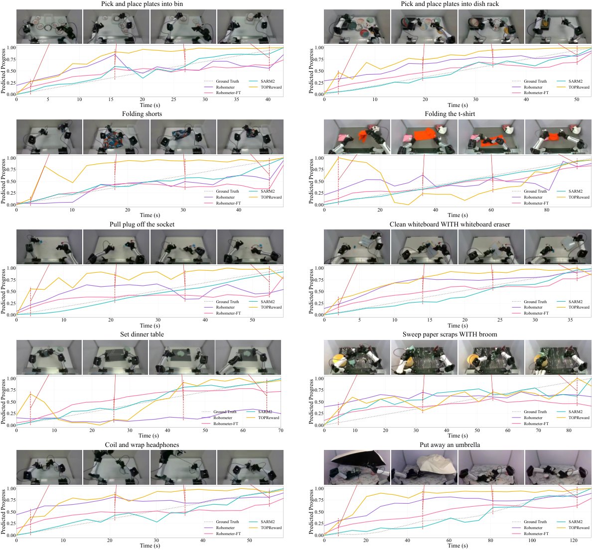
또한 실제 policy training 조건에서 각 reward model이 얼마나 충실하게 작동하는지 알아보기 위해, 질적으로 서로 다른 두 task인 Folding Shorts(그림 8)와 Cleaning Whiteboard(그림 9)의 on-policy rollout에서 예측 progress signal과 key frame을 함께 시각화한다. 두 task 모두에서 SARM2는 rollout의 segment-level detail을 포착한다. robot이 실제로 진전할 때 예측 progress가 상승하고, robot이 자세를 조정하거나 어려움을 겪을 때 정체하거나 하락하며, 치명적인 실패 시 급격히 감소한다. 이는 시각화된 key frame과 일치한다. 반면 SARM2와 마찬가지로 labeled rollout에서 LoRA fine-tuning한 Robometer baseline은 이러한 transition을 놓친다. robot이 눈에 띄게 어려움을 겪는데도 상승하는 progress signal을 출력하거나, policy가 실제로 task를 진전시키는 구간에서도 평평한 값을 유지하는 경우가 많다. 이러한 차이는 downstream policy-training 격차로 직접 이어진다. 잘못 shaping된 value estimate는 reward와 advantage를 잘못 할당하고, policy update에 noisy하거나 때로는 부호가 뒤집힌 gradient를 입력하여 self-improvement를 늦추거나 불안정하게 만든다.
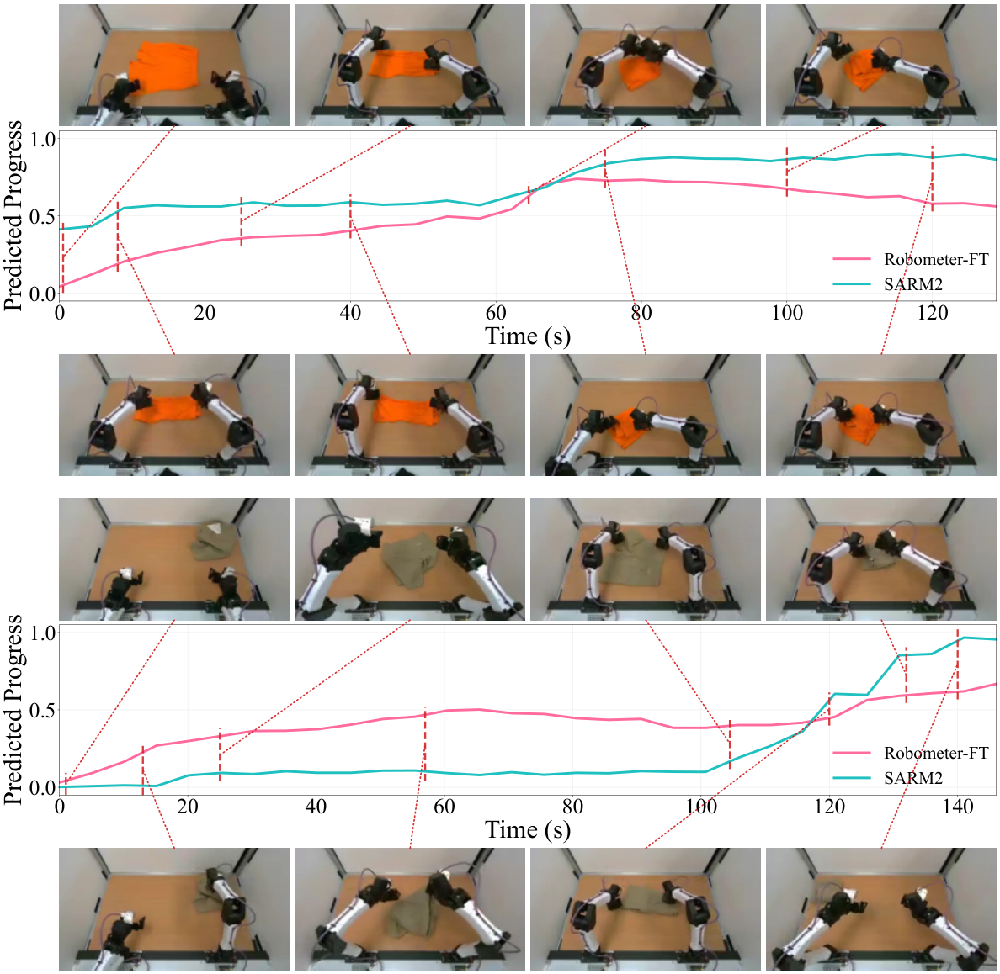
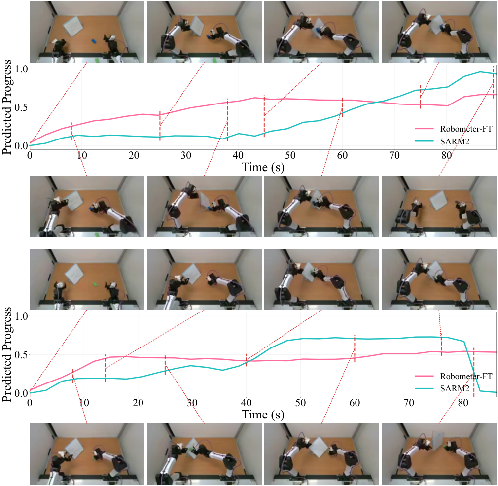
action primitive 기반 stage estimator는 모든 timestep에 걸쳐 집계한 micro-level 평균 정확도 85.22%를 달성한다. 각 task의 held-out test set(task당 10 episode)에 대한 task별 결과는 표 9에 제시한다. 또한 그림 10과 11은 각 task에 대해 예측 action primitive를 ground truth와 비교하고 trajectory에 따른 MoE expert 선택을 함께 보여 주는 대표 사례 하나씩을 제시한다.
| Task 이름 | Stage Estimator 정확도(%) |
|---|---|
| plate를 집어 bin에 넣기 | 89.32 |
| plate를 집어 dish rack에 놓기 | 79.01 |
| shorts 접기 | 97.52 |
| t-shirt 접기 | 98.27 |
| socket에서 plug 뽑기 | 79.40 |
| whiteboard eraser로 whiteboard 닦기 | 96.22 |
| dinner table 차리기 | 70.85 |
| broom으로 종이 조각 쓸기 | 91.15 |
| headphone 감아 정리하기 | 97.72 |
| umbrella 접어 넣기 | 57.74 |
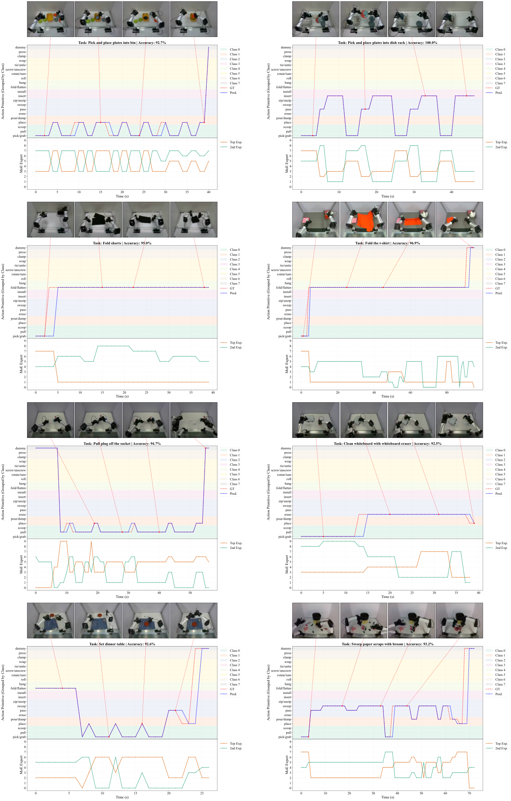
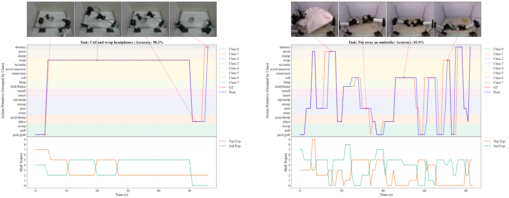
p̄e(m)을 batch에서 gate m이 expert e에 할당한 평균 routing probability라 하고, fe(m)을 expert e가 top-k에 선택된 token의 비율이라 한다. 그러면 다음과 같다.
L_balance = Σ_(m=0)^M E · Σ_(e=1)^E f_e^(m) · p̄_e^(m)
L_entropy = −Σ_(m=0)^M Σ_(e=1)^E p̄_e^(m) log p̄_e^(m) (7)balance 항은 각 gate 안에서 expert가 균일하게 활용되도록 유도하며, entropy 항은 training 초기에 routing distribution이 지나치게 뾰족해지는 것을 방지한다.
Reward model 재사용성. 하나의 reward model은 여러 downstream task의 demonstration에 label을 부여하고 rollout 기반 fine-tuning의 출발점 역할을 할 수 있으므로, reward model training 비용을 task suite 전체에 걸쳐 분산할 수 있다.
RL을 위한 혼합 objective. 이 hybrid 설계의 동기를 설명하기 위해 두 objective를 간단히 대조한다. replay buffer D의 transition으로 학습한 critic Qϕ(s,a)가 주어졌을 때, TD objective는 next-state value를 bootstrap하는 반면 MC objective는 empirical discounted return으로 regression한다.
y_t^TD = r_t + γ Q_ϕ′(s_(t+1), a_(t+1))
J_TD(ϕ) = E_D[(Q_ϕ(s_t, a_t) − y_t^TD)²]
y_t^MC = Σ_(k=t)^T γ^(k−t) r_k
J_MC(ϕ) = E_D[(Q_ϕ(s_t, a_t) − y_t^MC)²] (8)TD target은 immediate reward rt와 one-step bootstrap에만 의존하므로, rt가 dense하고 국소적으로 유용한 정보를 담고 있으면 critic은 매 step에서 정밀한 learning signal을 받는다. 이 특성 때문에 TD는 특히 long-horizon task에 적합하다. 각 transition이 gradient에 기여하며, credit assignment가 멀리 떨어진 terminal signal에서 수백 step을 거쳐 전파될 필요가 없다. 반면 MC target은 critic을 empirical discounted return에 regression한다. sparse terminal reward(rk=0 for k<T, rT=Rsparse)에서는 ytMC=γT−tRsparse로 축약된다. discount γT−t는 episode 길이에 따라 terminal credit을 지수적으로 약화하므로 성공하면서 빠른 episode가 성공하지만 느린 episode보다 엄격히 더 큰 target을 갖는다. 따라서 MC objective에는 짧고 성공적인 trajectory를 꾸준히 선호하는 성질이 내재한다. 두 objective는 상호 보완적이다. TD는 trajectory 전반에서 미세한 action choice를 세밀하게 shaping하고, MC는 빠르고 성공적인 episode에 대한 안정적인 global preference를 부여하여 policy가 그러한 episode의 motion style을 계승하게 한다.
두 항을 다음과 같이 결합한다.
J_critic(ϕ) = J_TD(ϕ) + α · J_MC(ϕ) (9)여기서 α는 local shaping과 global preference 사이의 균형을 조절한다. 이 hybrid 설계를 검증하기 위해 offline RL setting에서 두 reward component를 ablation하고, 두 task 모두에서 전체 mixed objective를 dense-reward TD 항 또는 sparse-reward MC 항만 사용하는 변형과 비교한다(표 10).
| Training 방법 | Folding Shorts(SR↑) | Cleaning Whiteboard | |||
|---|---|---|---|---|---|
| Flat | Crumble | SR↑ | Avg. Prog. ↑ | Prog. Gain ↑ | |
| BC | 1/12 | 0/12 | 4/20 | 0.475 | N/A |
| RL-Sparse(MC만) | 4/12 | 2/12 | 6/20 | 0.625 | 0.150 |
| RL-Dense(TD만) | 5/12 | 4/12 | 9/20 | 0.745 | 0.270 |
| RL-Dense(mixed obj.) | 7/12 | 4/12 | 10/20 | 0.813 | 0.338 |
일회성 human labeling effort. reward model adaptation(Stage 2)은 일회성 작업이다. pipeline에서 가장 약한 policy인 BC policy π1으로부터 R1을 의도적으로 수집한다. 이 policy의 rollout은 가장 다양한 out-of-distribution(OOD) failure mode를 드러내며, 이것이 바로 reward model이 올바르게 score하는 방법을 배워야 할 state이기 때문이다. R1으로 약 100개의 rollout을 수집하고 segment로 나눈 다음, 각 segment에 {빠른 진전, 느린 진전, 조정, 실수} 중 하나와 evaluation protocol에서 산출한 최종 progress value를 label로 부여한다. annotation interface는 그림 12에 제시한다. 경험상 두 task에서 각각 100개의 rollout에 label을 부여하는 데 2~3시간이 걸렸다. 작은 adaptation set에 대한 overfitting을 막기 위해 R1labeled를 기존 task-specific reward model training data의 50% subsample과 혼합한다. 그 결과 fine-tuning run에는 pretraining compute의 약 1/10이 필요하다.
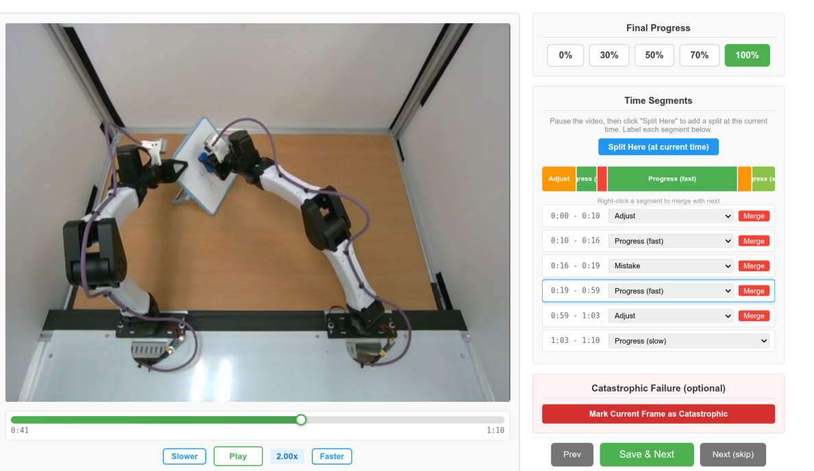
최소한의 human involvement. self-improvement pipeline 가운데 본 방법은 인간에게 가장 적은 부담을 요구한다. RM2를 얻은 뒤에는 추가 human labeling 없이 SPIRAL loop가 실행된다. operator는 environment reset과 safety supervision에만 필요하며, iteration마다 rollout을 50~100개만 수집해도 2~3회 iteration이면 target task를 안정적으로 해결하기에 충분하다(그림 4 참조). 이는 π0.6과 같은 intervention 기반 방법과 뚜렷이 대비된다. 이러한 방법에서는 정확한 순간에 정밀하고 단호한 motion으로 human-in-the-loop correction을 online으로 제공해야 하므로, annotator가 숙련된 teleoperator인 동시에 policy failure mode를 속속들이 알아야 한다. 반면 본 framework는 초기 rollout set에 대한 offline researcher-level annotation만 요구한다. 이는 인간에게 real-time skill을 요구하지 않는 일회성 작업이며 훨씬 쉽게 확장할 수 있다.
Error correction을 넘어서. rollout labeling은 잘못된 behavior를 수정하고 OOD state에서 복구하는 데 그치지 않는다. policy를 가장 효율적이고 안정적인 solution strategy로 암묵적으로 유도하여 execution style을 human preference와 정렬한다. 그림 13은 Cleaning Whiteboard에서 이를 보여 준다. 위쪽 frame은 정석적인 strategy를 나타낸다. 왼팔은 board의 위쪽 corner를 잡아 단단히 고정하고, 오른팔은 안정적인 contact를 유지한 채 eraser로 닦는다. 아래쪽 frame은 초기 BC policy의 failure mode를 보여 준다. 왼팔이 stand의 아래쪽 bar를 잡는데, 이는 불안정한 지지 방식이어서 닦을 때마다 board가 기울었다가 되돌아오므로 cleaning이 느리고 오류가 발생하기 쉽다. 이러한 grasp는 demonstration set에 나타나지 않는 OOD behavior이다. 엄밀히 말하면 mistake는 아니다. progress가 계속 증가할 수 있기 때문이다(board가 실제로 더 깨끗해진다). 그러나 motion은 비효율적이고 whiteboard 전체를 넘어뜨릴 위험이 있다. 따라서 이러한 segment를 reward 0인 “조정”으로 labeling하여 fine-tuning을 통해 human preference와 high-level prior knowledge를 RM2에 주입한다. SPIRAL loop 이후 policy는 이 preference를 distill하여 더 이상 불안정한 grasp를 사용하지 않는다.
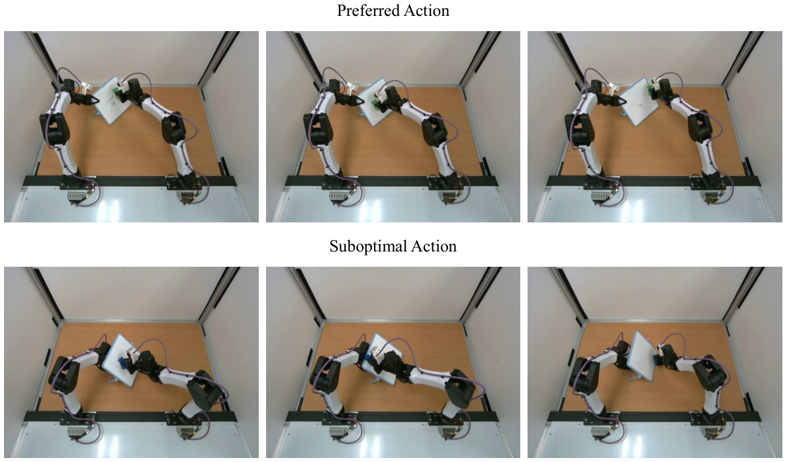
Crumble 상태에서 시작하는 Folding Shorts의 불완전한 결과. SPIRAL을 세 round 수행한 뒤 본 policy는 vanilla BC 및 offline RL보다 상당히 높은 success rate를 달성한다(8/12 대 0/12 대 4/12). 그러나 이 결과는 flat 상태에서 시작하는 Folding Shorts(12/12) 및 Cleaning Whiteboard(18/20)의 거의 포화된 성능과 비교하면 여전히 뚜렷한 격차가 있으며, X-VLA와 같은 최근 SOTA cloth-folding VLA policy보다도 낮다. 이 한계에는 여러 요인이 있다고 본다. 첫째, policy는 demonstration data 20시간만으로 학습되며, 이는 cloth folding에서 low-data regime에 해당한다. 더욱이 demonstration은 filtering되지 않았고 품질도 다양하다. 대략적인 proxy로 보면 shorts 한 벌을 접는 데 필요한 시간이 episode에 따라 40초에서 100초까지 차이 난다. 또한 서로 다른 operator가 데이터를 수집하므로 미묘한 modality 차이가 있다. 예를 들어 folding 중 사용하는 grasping position처럼 일부 step에서 operator마다 선호 action이 다를 수 있다. 둘째, flat 상태에서 시작하는 Folding Shorts나 Cleaning Whiteboard와 비교할 때, crumble 상태에서 시작하는 Folding Shorts에는 shorts를 평평하게 펴는 더 어렵고 덜 구조화된 stage가 포함된다. 이 stage에서 robot은 shorts를 완전히 평평하게 만들기 위해 여러 번 시도해야 하는 경우가 많다. 부드러운 cloth의 deformability와 다양한 cloth texture 때문에 shorts는 매우 많은 가능한 state로 나타날 수 있다. 그 결과 현재 reward model은 각 시도 후 cloth가 더 평평해졌는지 안정적으로 판단하기에 충분한 granularity와 accuracy를 갖추지 못했다. 특히 shorts가 여전히 심하게 구겨진 초기 몇 차례 시도에서 그렇다. 이 때문에 이 stage에서 reward signal이 평평하게 유지되거나 noisy해진다. 또한 그림 12에서 보듯 미묘한 human folding skill은 현재 방법으로 labeling하기 어렵다. 따라서 이러한 skill을 SPIRAL을 통해 downstream policy로 distill하기도 어렵다. 이는 본 방법의 중요한 한계이다. state variation이 큰 고도로 복잡한 task에서는 통일된 protocol과 modality 아래에서 수집한 대량의 고품질 demonstration data로 학습하는 것이 여전히 가장 효과적인 post-training strategy일 수 있다.
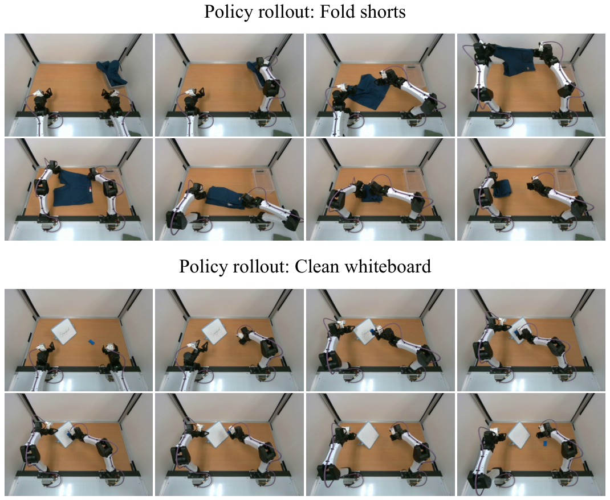
원문 프로젝트 페이지에서 수집한 영상 22개의 로컬 보존본과 원본 URL을 함께 제공한다.
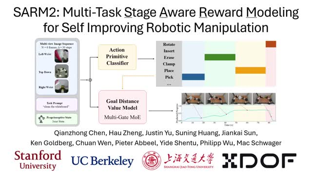
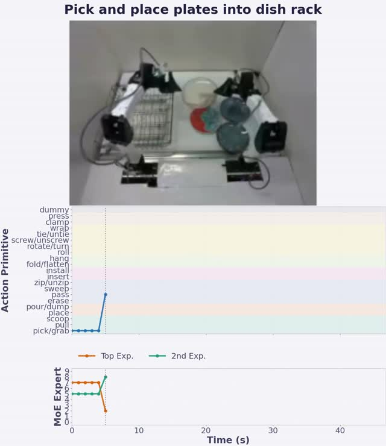
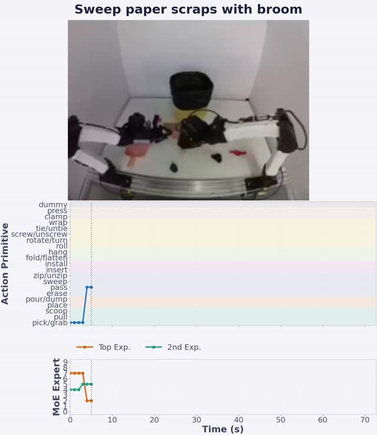
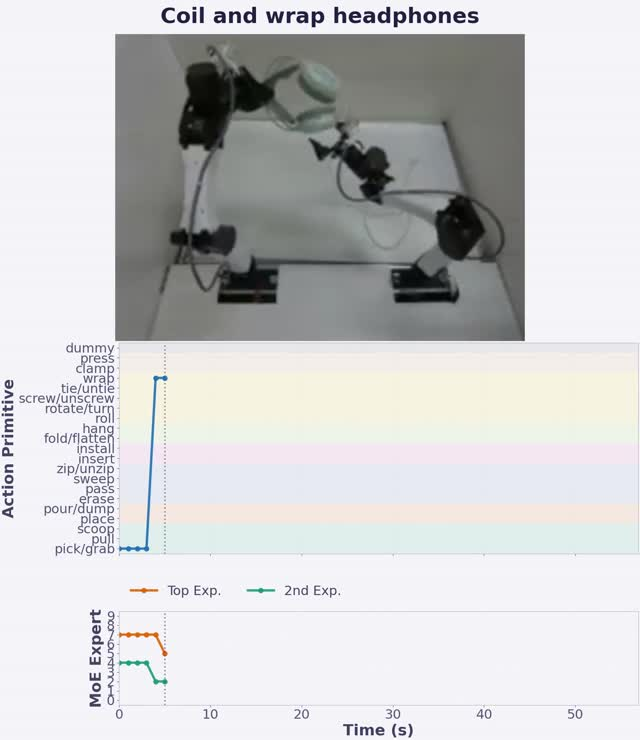
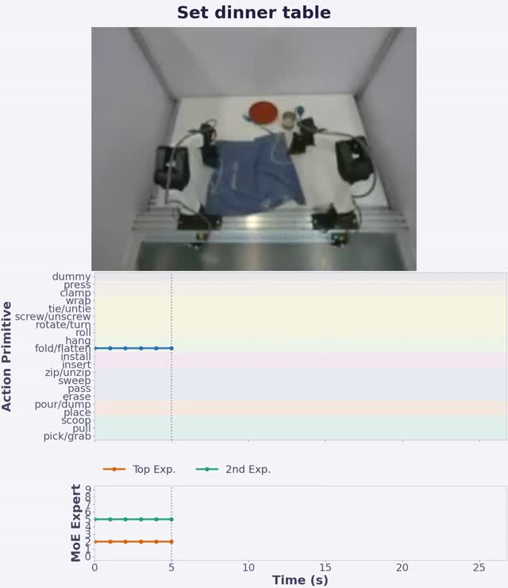
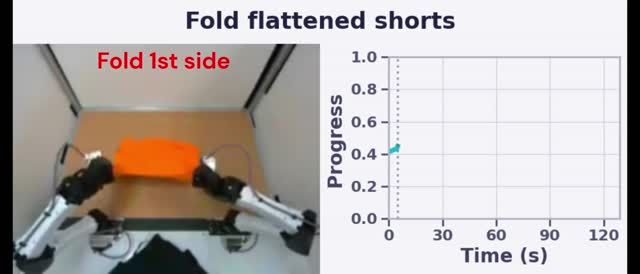
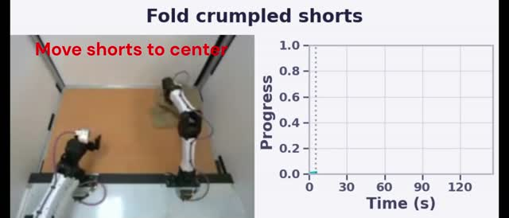
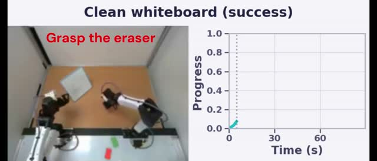
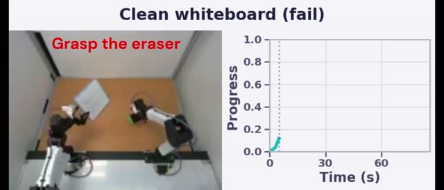
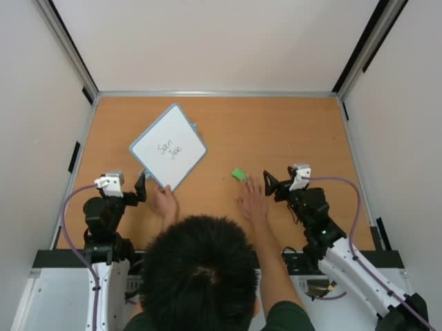
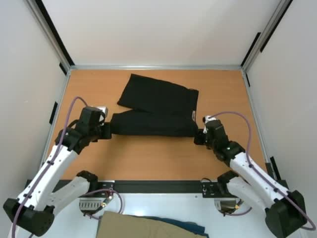
| # | 파일 | 레포 사본 | 원본 |
|---|---|---|---|
| 1 | lerobot-722821.png | assets/images/lerobot-722821.png | 원본 |
| 2 | xiaohongshu-f3d9a5.png | assets/images/xiaohongshu-f3d9a5.png | 원본 |
| 3 | rm_plot-501cc8.png | assets/images/rm_plot-501cc8.png | 원본 |
| 4 | framework_plot-70bfdd.png | assets/images/framework_plot-70bfdd.png | 원본 |
원문 참고문헌을 대조용으로 원문 표기 그대로 정리한다.
{kind=link}
{kind=link}
{kind=link}
{kind=link}
{kind=link}
{kind=link}
{kind=link}
{kind=link}